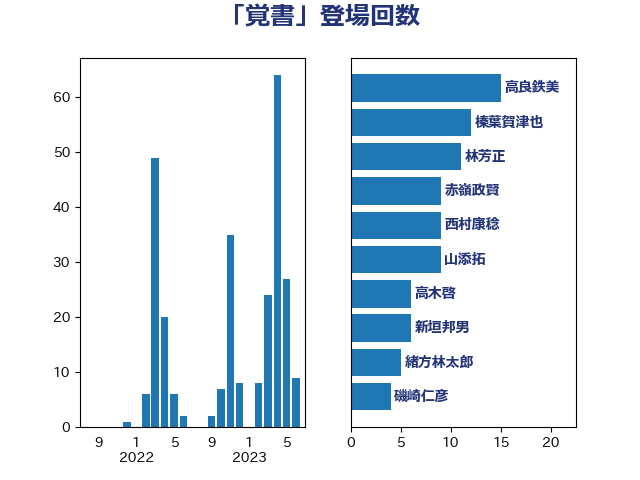

単語「覚書」

| 高良鉄美 | 無所属 | 15 回 |
| 榛葉賀津也 | 国民民主党 | 12 回 |
| 林芳正 | 自由民主党 | 11 回 |
| 赤嶺政賢 | 日本共産党 | 9 回 |
| 西村康稔 | 自由民主党 | 9 回 |
| 山添拓 | 日本共産党 | 9 回 |
| 高木啓 | 自由民主党 | 6 回 |
| 新垣邦男 | 立憲民主党 | 6 回 |
| 緒方林太郎 | 無所属 | 5 回 |
| 磯崎仁彦 | 自由民主党 | 4 回 |
| 浜田靖一 | 自由民主党 | 4 回 |
| 杉本和巳 | 日本維新の会 | 4 回 |
| 太田房江 | 自由民主党 | 4 回 |
| 青山大人 | 立憲民主党 | 3 回 |
| 鈴木敦 | 国民民主党 | 3 回 |
| 葉梨康弘 | 自由民主党 | 3 回 |
| 猪口邦子 | 自由民主党 | 3 回 |
| 渡辺周 | 立憲民主党 | 3 回 |
| 川合孝典 | 国民民主党 | 3 回 |
| 岸田文雄 | 自由民主党 | 3 回 |
| 山田勝彦 | 立憲民主党 | 3 回 |
| 太栄志 | 立憲民主党 | 3 回 |
| 大串正樹 | 自由民主党 | 3 回 |
| 佐藤正久 | 自由民主党 | 3 回 |
| 仁比聡平 | 日本共産党 | 3 回 |
| 馬場雄基 | 立憲民主党 | 2 回 |
| 青山繁晴 | 自由民主党 | 2 回 |
| 長友慎治 | 国民民主党 | 2 回 |
| 足立康史 | 日本維新の会 | 2 回 |
| 西村明宏 | 自由民主党 | 2 回 |
| 石川香織 | 立憲民主党 | 2 回 |
| 石川博崇 | 公明党 | 2 回 |
| 浅田均 | 日本維新の会 | 2 回 |
| 山谷えり子 | 自由民主党 | 2 回 |
| 山田宏 | 自由民主党 | 2 回 |
| 小林鷹之 | 自由民主党 | 2 回 |
| 古川禎久 | 自由民主党 | 2 回 |
| 齋藤健 | 自由民主党 | 1 回 |
| 長峯誠 | 自由民主党 | 1 回 |
| 鈴木宗男 | 日本維新の会 | 1 回 |
| 鈴木俊一 | 自由民主党 | 1 回 |
| 谷合正明 | 公明党 | 1 回 |
| 西銘恒三郎 | 自由民主党 | 1 回 |
| 藤原崇 | 自由民主党 | 1 回 |
| 自見はなこ | 自由民主党 | 1 回 |
| 細田健一 | 自由民主党 | 1 回 |
| 篠原豪 | 立憲民主党 | 1 回 |
| 畦元将吾 | 自由民主党 | 1 回 |
| 浜口誠 | 国民民主党 | 1 回 |
| 梅村みずほ | 日本維新の会 | 1 回 |
| 松下新平 | 自由民主党 | 1 回 |
| 新藤義孝 | 自由民主党 | 1 回 |
| 斉藤鉄夫 | 公明党 | 1 回 |
| 平木大作 | 公明党 | 1 回 |
| 岩渕友 | 日本共産党 | 1 回 |
| 山本太郎 | れいわ新選組 | 1 回 |
| 山下貴司 | 自由民主党 | 1 回 |
| 大岡敏孝 | 自由民主党 | 1 回 |
| 國場幸之助 | 自由民主党 | 1 回 |
| 吉川ゆうみ | 自由民主党 | 1 回 |
| 勝俣孝明 | 自由民主党 | 1 回 |
| 加藤勝信 | 自由民主党 | 1 回 |
| 伊藤渉 | 公明党 | 1 回 |
| 上杉謙太郎 | 自由民主党 | 1 回 |
| 三木圭恵 | 日本維新の会 | 1 回 |